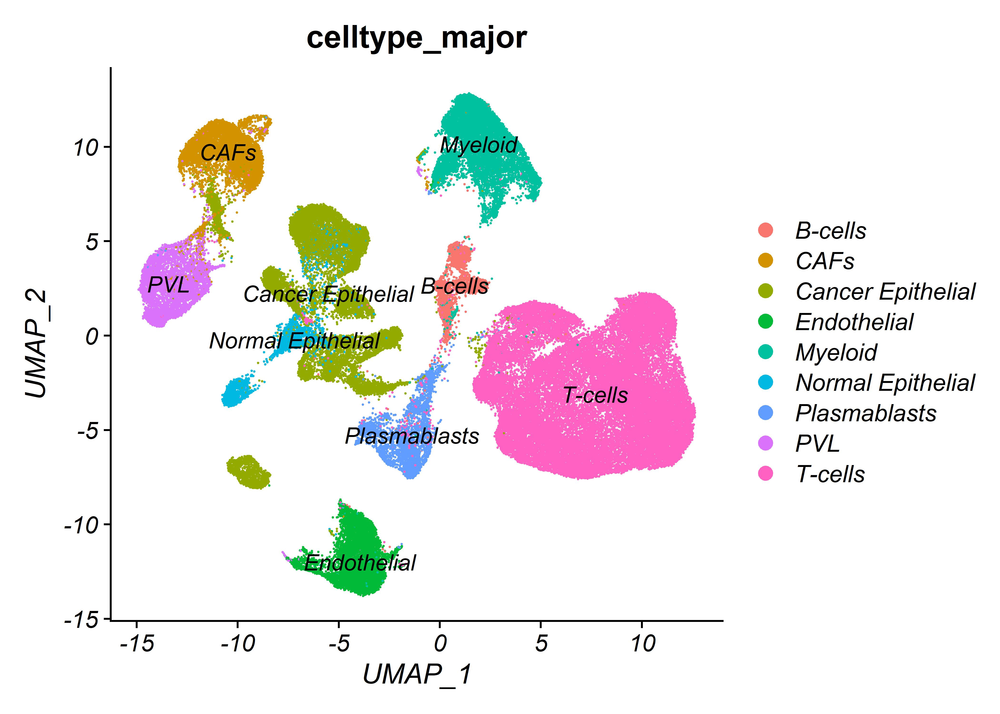
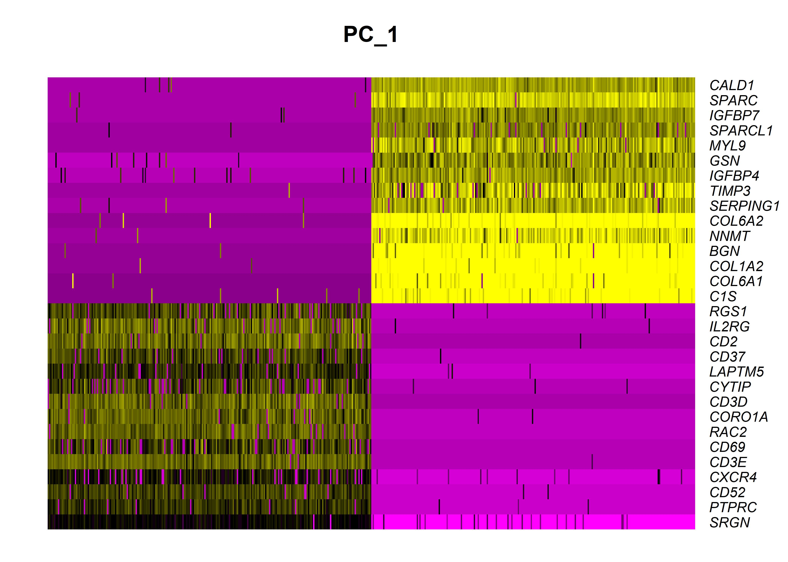
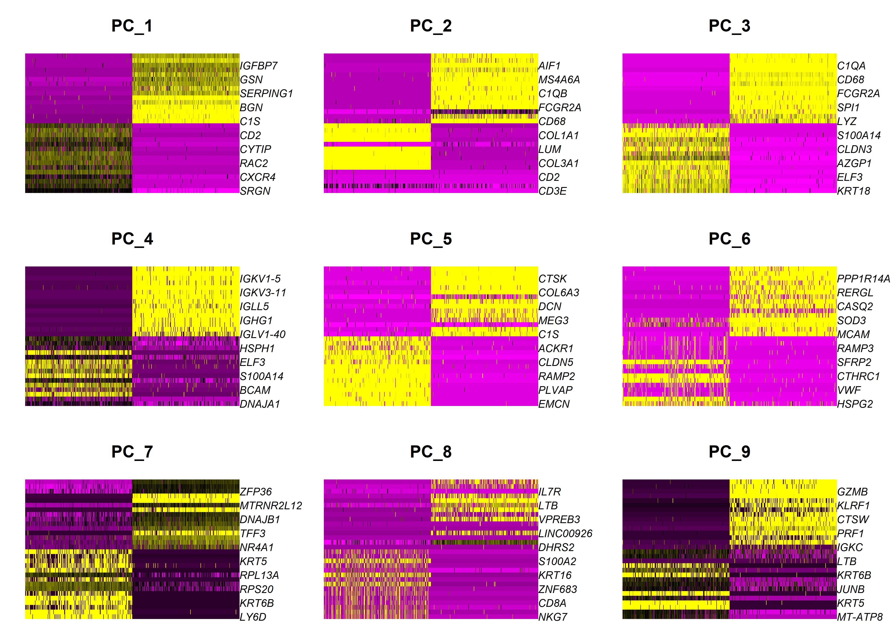
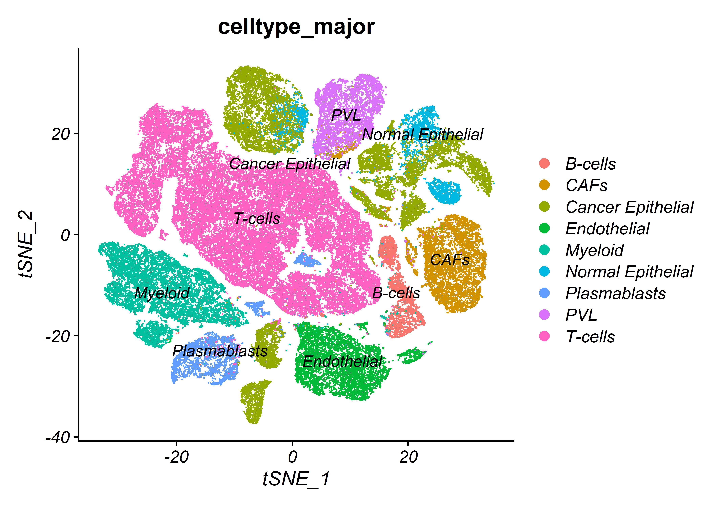
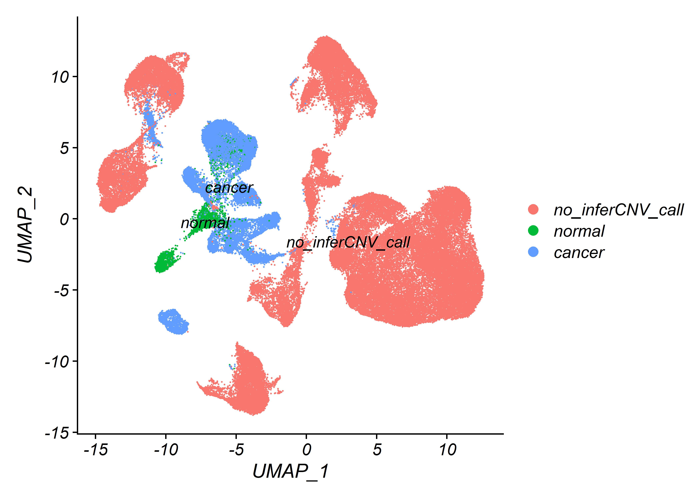
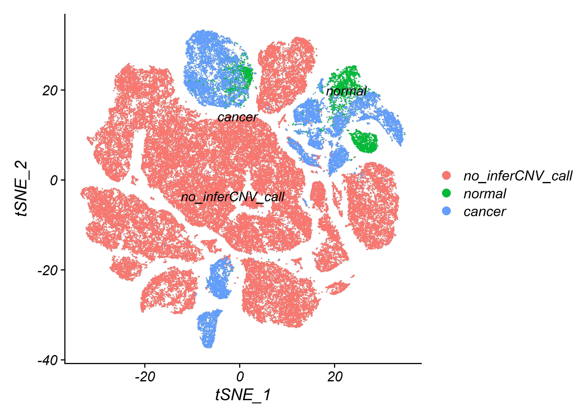
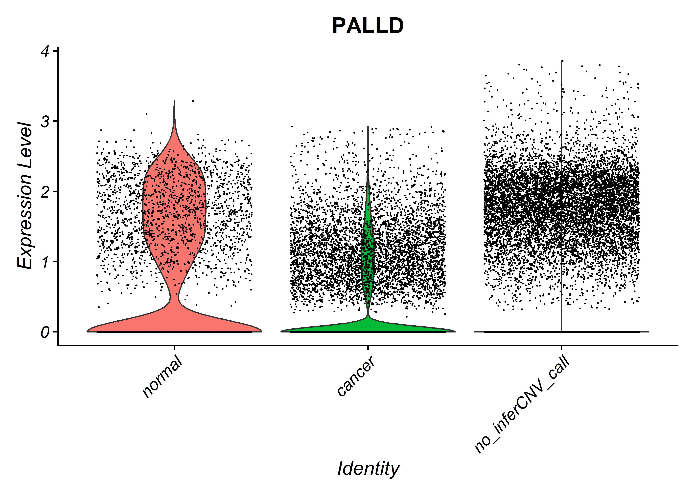

SCRNA-seq Breast cancer -analysis
SCRNA-seq
Breast-cancer
Breast cancer data was obtained from single cell portal. single cell analysis executed with R program and Seurat package, Pallad expression was examined in Breast cancer data. our lab found PALLD express in breast cancr, PALLD expression was examined between different cell type , different cluster groups, alsotop 10 mrker for each cluster was obtained

Libreries
library(pacman)
library(Seurat)
labrvec <- c("tidyverse","ggplot2","Matrix","AnnotationDbi","readxl",
"Seurat","future","patchwork","stringr")
pacman::p_load(labrvec,install = TRUE,character.only = TRUE)Files
# reading RDS
BCdata <- readRDS("BCdatageneral.rds")Pre-Processing
Won’t be used at the creation of this files because already created and RDS will be use.
# define nultiprocess for seurat
#
# Breast.cancer.SCdata<-Read10X(
# data.dir = indir ,
# gene.column = 1,
# unique.features = TRUE,
# strip.suffix = FALSE
# )
# #class(Breast.cancer.SCdata)
# print(object.size(Breast.cancer.SCdata), units="Gb")
# # head(Breast.cancer.SCdata)
# mini.atlas <- read.csv('C:/Users/user/Desktop/BCsinglecelldata/Whole_miniatlas_meta.csv')
# gene_targets <- read_excel("C:/Users/user/Desktop/BCsinglecelldata/spikesearchtargetgenes.xlsx",)
# # summary(mini.atlas)
# gene_targets <- pull(gene_targets,"Gene name")
# gene_targets <- gene_targets[!is.na(gene_targets)]
# gene_targets <- gene_targets[1:128]
# gene_targets <- gene_targets[!duplicated(gene_targets)]
# #gene_targets
# colnames(mini.atlas)[1] <- "NAMES"
# #mini.atlas
# rownames(mini.atlas) <- pull(mini.atlas,"NAMES")
# #mini.atlas.C <- mini.atlas %>% filter(normal_cell_call == "cancer")
# cancer.cell.types <- pull(mini.atlas,"normal_cell_call") %>% unique()
# #cancer.cell.types
# mini.atlas <- mini.atlas[-1,-1]
# # head(mini.atlas)
# BCdata <- CreateSeuratObject(
# Breast.cancer.SCdata,
# project = "BC",
# assay = "RNA",
# min.cells = 0,
# min.features = 0,
# names.field = 1,
# names.delim = "_",
# meta.data = mini.atlas
# )
# looking at the idents in seurat object
# head(BCdata[[]])
# #BCdata
# BCdata@meta.data$project <- "BC"
# BCdata <- StashIdent(object = BCdata, save.name = "old.ident")
# Idents(object = BCdata) <- "project"
# Idents(object = BCdata)
#BCdata <- subset(x = BCdata, idents = "cancer")
# row.names(BCdata)
# # BCdata[[]]
# # extract the mitochondrial DNA
# BCdata[["Percent_mito"]] <-unlist(BCdata[["Percent_mito"]]) %>% as.numeric()
# BCdata[["nCount_RNA"]] <-unlist(BCdata[["nCount_RNA"]]) %>% as.numeric()
# BCdata[["nFeature_RNA"]] <-unlist(BCdata[["nFeature_RNA"]]) %>% as.numeric()
# BCdata[["percent.mt"]] <- PercentageFeatureSet(object = BCdata, pattern = "^MT-")
# #Idents(object = BCdata) <- "celltype_subset"
# BCdata[["normal_cell_call"]] %>% unique()
# fixing to column Percent_mito as numericFeature-scatter & violin
Idents(BCdata) <- "Breast cancer"
plot1 <- FeatureScatter(BCdata, feature1 = "nCount_RNA", feature2 = "Percent_mito",raster=FALSE)
plot2 <- FeatureScatter(BCdata, feature1 = "nCount_RNA", feature2 = "nFeature_RNA",raster=FALSE)
plot2 + plot1
VlnPlot(BCdata, features = c("nFeature_RNA", "nCount_RNA","Percent_mito"), ncol = 3,pt.size = 0)
VlnPlot(BCdata, features = c("nFeature_RNA", "nCount_RNA","Percent_mito"), ncol = 3)
Variable Feature-plot
BCdata <- NormalizeData(BCdata)
BCdata <- FindVariableFeatures(BCdata, selection.method = “vst”, nfeatures = 2000)
## what are our variable genes ?
top10 <- head(VariableFeatures(BCdata), 10)
top10## [1] "SCGB2A2" "IGHV1-69" "SCGB1B2P" "IGFBP7" "IGHG1" "CCL4"
## [7] "IGLV2-28" "IGKV2D-28" "IGKV2D-29" "CD74"# plot variable features with and without labels
plot1 <- VariableFeaturePlot(BCdata)
plot2 <- LabelPoints(plot = plot1, points = top10, repel = TRUE)
plot1 + plot2
PCA-plot
# all_genes <- rownames(BCdata)
# # all_genes
# BCdata <- ScaleData(BCdata)
# BCdata <- RunPCA(BCdata, features = VariableFeatures(object = BCdata))
VizDimLoadings(BCdata, dims = 1:2, reduction = "pca")
DimPlot(BCdata, reduction = "pca")
Heat-map
# Examine and visualize PCA results a few different ways
#(BCdata[["pca"]], dims = 1:5, nfeatures = 5)
DimHeatmap(BCdata, dims = 1, cells = 500, balanced = TRUE)
DimHeatmap(BCdata, dims = 1:9, cells = 500, balanced = TRUE)
JackStrawPlot & ElbowPlot
# BCdata <- JackStraw(BCdata, num.replicate = 100)
# BCdata <- ScoreJackStraw(BCdata, dims = 1:20)
JackStrawPlot(BCdata, dims = 1:15)
ElbowPlot(BCdata)
Umap & tsne
# BCdata <- FindNeighbors(BCdata, dims = 1:10)
# BCdata <- FindClusters(BCdata, resolution = 0.4)
# BCdata <- RunUMAP(BCdata, dims = 1:10)
# BCdata <- RunTSNE(BCdata, dims = 1:10)
# Look at cluster IDs of the first 5 cells
head(Idents(BCdata), 5) ## CID3586_AAGACCTCAGCATGAG CID3586_AAGGTTCGTAGTACCT CID3586_ACCAGTAGTTGTGGCC
## Breast cancer Breast cancer Breast cancer
## CID3586_ACCCACTAGATGTCGG CID3586_ACTTGTTAGGGAAACA
## Breast cancer Breast cancer
## Levels: Breast cancerDimPlot(BCdata, reduction = "umap",group.by = "celltype_major" ,label = TRUE)DimPlot(BCdata, reduction = "tsne",group.by = "celltype_major" ,label = TRUE)
#saveRDS(BCdata, file = "C:/Users/user/Desktop/BCsinglecelldata/BCdata.rds")heat map markers for each cell types major
DimPlot(BCdata, reduction = "umap",group.by ="celltype_major" , label = TRUE, pt.size = 0.5)
BCdata.markers <- readRDS('BCdata.markers.rds')
# Idents(BCdata) <- "celltype_major"
# BCdata.markers <- FindAllMarkers(BCdata, only.pos = TRUE, min.pct = 0.25, logfc.threshold = 0.25)
BCdata.markers %>%
group_by(cluster) %>%
top_n(n = 10, wt = avg_log2FC) -> top10
DoHeatmap(BCdata, features = top10$gene) + NoLegend()
# saveRDS(BCdata.markers, file = "BCdata.markers.rds")violin plot PALLD
Idnets normal_cell_call
Idents(BCdata) <- 'normal_cell_call'
DimPlot(BCdata, reduction = "umap" ,label = TRUE)
DimPlot(BCdata, reduction = "tsne" ,label = TRUE)
VlnPlot(BCdata, features = c("PALLD"), sort = TRUE) + NoLegend()
cancer subset
BCdata_cancer <- readRDS('BCdata_subset_cancer.rds')
Idents(BCdata_cancer) <- "celltype_minor"Umap & Tsne Cancer Cells
DimPlot(BCdata_cancer, reduction = "umap",label = TRUE)
DimPlot(BCdata_cancer, reduction = "tsne" ,label = TRUE)
VlnPlot(BCdata_cancer, features = c("PALLD"), sort = TRUE) + NoLegend()
Find all markers by cancer idents
Idents(BCdata) <- 'normal_cell_call'
# BCdata_markers_normal_cell_call <- FindAllMarkers(BCdata, only.pos = TRUE, min.pct = 0.25, logfc.threshold = 0.25)
BCdata_markers_normal_cell_call <- readRDS('BCdata_markers_normal_cell_call.rds')
BCdata_markers_normal_cell_call %>%
group_by(cluster) %>%
top_n(n = 10, wt = avg_log2FC) -> top10
DoHeatmap(BCdata, features = top10$gene) + NoLegend()
#saveRDS(BCdata_markers_normal_cell_call, file = "BCdata_markers_normal_cell_call.rds")References:
Breast Cancer SCRNA-seq data from single cell portal
seurat R package used v4.